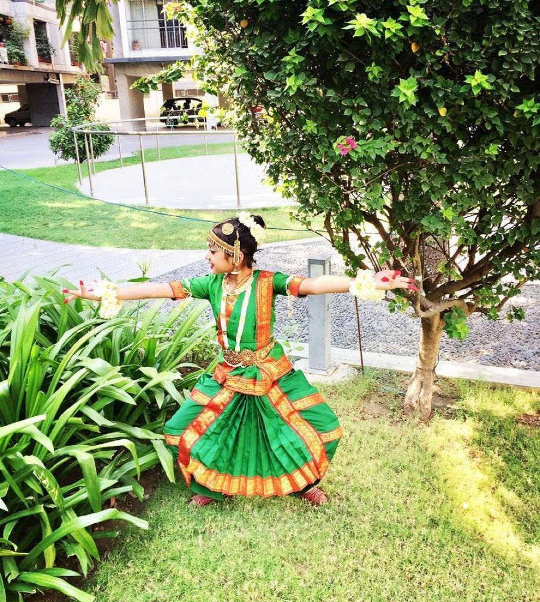
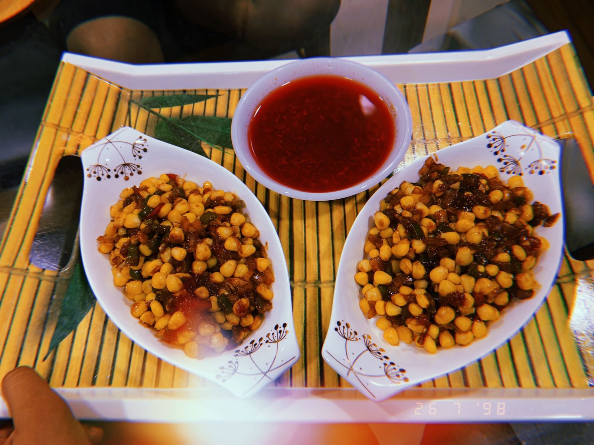

1. DANCING

Dancing is a part of my live now i started dancing at the age of 5 and dance really helped me in imroving my health and stamina, i am doing bharatnayam from 5yrs and western from 10yrs
2. LISTNENING TO MUSIC

I love listening to music, i can listen music in any situtation you can easily guess my mood on basis of which type of song i'm listening to. I don't have any specific choices in songs i can listen to any type.
3. COOKING

I always wanted to learn cooking i thought it is intresting and yes it is. this pandamic taught us many things and as i said i wanted to learn cooking so i learnt how to cook food, i learnt how to make different-diffrent varieties so that in any condition/situation atleast i can make food for myself.